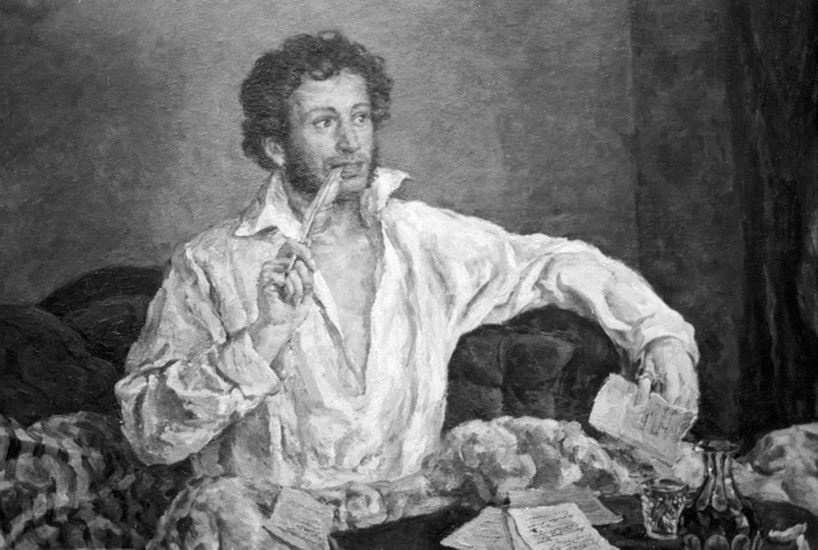

PUSHKIN

.Alexander Sergeyevich Pushkin [1799-1837].
Nếu có cái gì mà người Nga không biết chán, đấy là Pushkin [1799-1837] bất kể là hình ảnh của ông đã được sử dụng và bị lạm dụng rất nhiều: Chế độ Sa hoàng, từng tôn vinh ông là người con trung thành của nền đế chế; thời Staline khuôn đúc ông như một kẻ vô thần và nổi loạn; còn bây giờ thì sự thương mại hóa quá mức không biết xấu hổ đề tên ông lên mọi hàng hóa từ những tấm kẹo chocola đến các chai rượu vodka! Chính đấy là lý do khiến một số người lo ngại rằng thứ thần tượng hóa này có thể giết đi tình yêu của nước Nga đối với Pushkin. Rõ ràng đấy là một nguy cơ, như nhà phê bình văn học Stanislav Rassadin viết trong một bài báo nhan đề Việc tư nhân hóa Pushkin của chúng ta: “Xem ra bao giờ đối với chúng ta việc chấp nhận Alexander Sergeyevich (Pushkin) vào công ty của mình cũng là việc tôn vinh đối với ông, nhưng lạy Chúa, tất cả những cái đó làm cho ông trở thành dung tục biết bao”.
Tuy nhiên, Pushkin lại là một phần hữu cơ của tâm thức Nga khó có thể làm cho sai lạc hay thấp kém đi. Vào tuổi lên bảy, hầu hết trẻ em Nga đều thuộc ít ra cũng một bài thơ của ông, không phải chỉ vì nó được đưa vào sách giáo khoa, mà vì nó rất dễ tiếp nhận, trong sáng và rất người để dễ dàng in sâu vào ký ức, như lời cầu nguyện của một đứa trẻ.
“Tình yêu đối với Pushkin (vốn không dễ dàng đối với người nước ngoài) là một dấu hiệu chân chính của một người mang nền văn hóa Nga”, Lidia Ginzburg, nhà ngữ văn Nga, viết như vậy vào dịp kỷ niệm này. Bà viết tiếp: “Bất kỳ nhà văn Nga nào khác có thể được yêu hay không - đấy là vấn đề khẩu vị. Nhưng với Pushkin, là một hiện tượng, đấy là điều bắt buộc đối với chúng ta. Pushkin chính là xương sống của văn hóa Nga, nơi hội tụ mọi mối liên hệ trước và sau. Lấy nó đi, mọi mối liên hệ đều sụp đổ”.
Trước tiên phải kể đến những tác phẩm của ông, rất phong phú và đồ sộ với một tác gia qua đời lúc 37 tuổi, mở đầu với những khúc sử thi dân gian như Ruslan và Ludmilla, cho đến tuyệt tác về một mối tình bị cự tuyệt Eugene Onegin và những áng văn xuôi về sau, như thiên tiểu thuyết Con gái viên đại úy.
Rồi còn cuộc đời ông nữa: Một chàng trai quý tộc rõ ràng mang dòng máu châu Phi, người mà giống như nhiều nhà văn Nga khác, bị giới cầm quyền đùa bỡn và giới kiểm duyệt để ý, lúc thì được Sa hoàng sủng ái, nhưng sau đó lại đẩy vào cái địa ngục của lưu đầy.
Cuối cùng là cái chết với cuộc đấu súng trên tuyết vì danh dự đối với người vợ xinh đẹp nhưng nhẹ dạ, và cơn hấp hối kéo dài trong ngôi nhà riêng ở St.Petersburg, bên ngoài là đám đông thức trắng đêm để than khóc ông.
Gạt bỏ đi những trò lãng mạn của thời đại cũ, câu chuyện về Pushkin là chuyện thường gặp trong lịch sử nước Nga. Nhà thơ được nhân dân (hay ít nhất là những người yêu thơ) yêu mến nhưng lại làm cho các nhà cầm quyền lo sợ này, sau khi qua đời đã được thừa nhận như là một vị thánh thế tục. Cũng giống như lịch sử nước Nga, câu chuyện về Pushkin đã được lái đi theo những hướng khác nhau bởi những người cầm quyền mỗi thời. Vào năm 1899, dịp 100 năm ngày sinh của ông, một hình mẫu quốc gia về ông được đưa ra, coi ông là một người theo chủ nghĩa quân chủ và một kẻ ngoan đạo. Năm 1937, vào dịp 100 năm ngày ông mất, thì lại là một hình mẫu đối lập.
Những cái đó đủ để giải thích cho làn sóng lạ thường về Pushkin, hàng trăm và có thể đến hàng ngàn cuốn sách, đã sẵn sàng tung ra vào dịp kỷ niệm năm nay, trong đó có cuốn Người yêu vụng trộm của Pushkin, một sưu tập những tư liệu suy đoán về gốc gác một phụ nữ mà Pushkin nhắc đến trong cuốn sổ tay là “N.N” mà người ta cho rằng đấy là người yêu thực sự và bí mật của ông.
Một tài liệu mới khác điều tra về nguồn gốc cuộc đấu súng của ông với Georges d’Anthès, một người Pháp ngạo mạn đã không hề hối hận về phát đạn giết người của mình.
Vào ngày 6/6, tại thị trấn Pushkinskiye Gory ở Pskov, nơi Pushkin sống phát vãng từ năm 1824 đến 1826, và sau đó được an táng tại tu viện Svyatgorsky, thủ tướng Nga Sergei Stepashin phát biểu: “Hôm nay vào ngày sinh của Pushkin, chúng ta một lần nữa tự hiểu ra mình. Chúng ta hãy nhận biết rằng chúng ta là một dân tộc mạnh mẽ và hùng cường”. Suốt trong thập kỷ 80, dòng người đổ về thăm nơi ở của Pushkin, một bộ ba những căn nhà bằng gỗ cực kỳ khiêm tốn, tiêu biểu cho giới quý tộc Nga vào đầu thế kỷ XIX, hàng năm lên tới khoảng 60 vạn người. Giống như nhà thơ đã từng viết: “Không phải tôi chỉ toàn là cát bụi. Trong lời ca của tôi mà sâu bọ không làm gì được, tinh thần của tôi vẫn sống”.